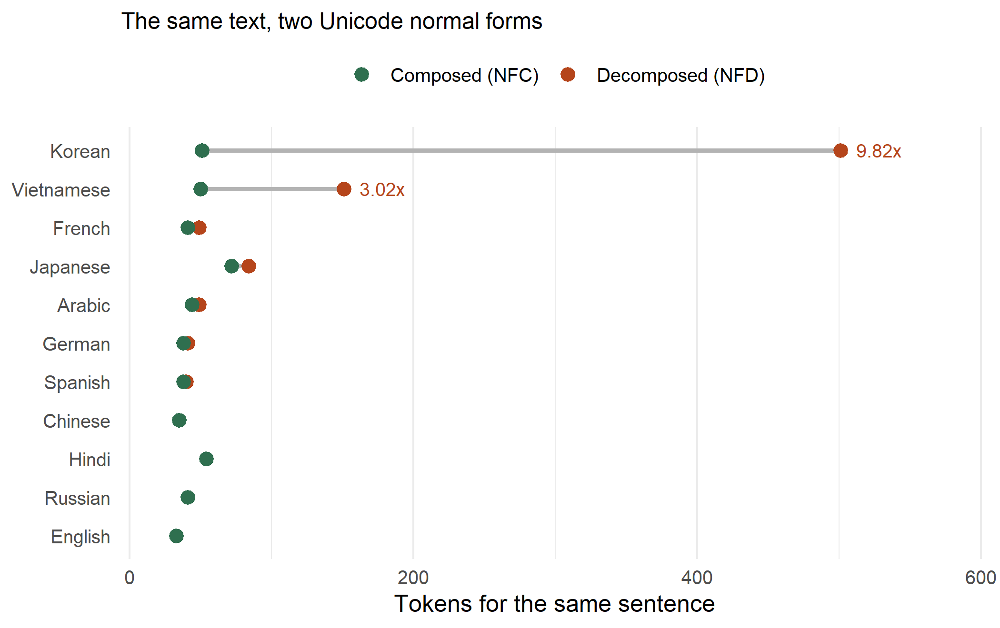

You pay LLM providers by the token, so token count is the price of everything you send and everything you get back. Two strings that are indistinguishable on screen, that compare equal to a human reader and pass every eyeball test, can differ eighteenfold in what they cost. The difference is a Unicode normal form nobody on your team has checked.
Here is the Korean word for hello, tokenized twice.
library(reticulate)
library(stringi)
enc <- import("tiktoken")$get_encoding("o200k_base") # GPT-4o and later
ntok <- function(s) length(enc$encode(s))
hello <- "안녕하세요"
c(composed_NFC = ntok(stri_trans_nfc(hello)),
decomposed_NFD = ntok(stri_trans_nfd(hello)))
## composed_NFC decomposed_NFD
## 2 36Same word. Same rendering in your browser, your terminal, and your database client. One costs 18 times more than the other.
Unicode lets you spell an accented character two ways. NFC composes it into a single code point. NFD decomposes it into a base letter followed by combining marks. Korean goes further: a Hangul syllable like 안 is one code point composed, and three separate jamo decomposed.
The two forms are canonically equivalent, which is the Unicode standard’s way of saying they mean the same thing and must display the same way.
nfc <- stri_trans_nfc(hello)
nfd <- stri_trans_nfd(hello)
identical(stri_trans_nfc(nfd), nfc) # same text once you re-compose
## [1] TRUE
identical(charToRaw(nfc), charToRaw(nfd)) # same bytes on the wire
## [1] FALSE
c(codepoints_nfc = stri_length(nfc), codepoints_nfd = stri_length(nfd))
## codepoints_nfc codepoints_nfd
## 5 12Equivalent to a reader, different to a tokenizer. String equality in most languages compares
bytes, so these two also fail == in the databases and caches sitting in front of your model.
Article 1 of the Universal Declaration of Human Rights, in eleven languages, taken verbatim from the Unicode Consortium’s own reference corpus. Each one tokenized composed and decomposed.
The corpus sits next to this post as a tab separated file, written straight from the upstream XML and never opened in an editor. That detail matters more than it sounds: editors, clipboards, and some version control settings silently recompose text, which would quietly erase the exact thing being measured here.
udhr <- read.delim("udhr_article1.tsv", encoding = "UTF-8",
quote = "", stringsAsFactors = FALSE)
udhr <- setNames(udhr$text, udhr$language)
length(udhr)
## [1] 11tok_both <- function(s) {
c(nfc = ntok(stri_trans_nfc(s)), nfd = ntok(stri_trans_nfd(s)))
}
res <- t(sapply(udhr, tok_both))
res <- data.frame(
language = rownames(res),
nfc = res[, "nfc"],
nfd = res[, "nfd"],
penalty = round(res[, "nfd"] / res[, "nfc"], 2),
vs_english = round(res[, "nfc"] / res["English", "nfc"], 2),
row.names = NULL
)
res[order(-res$penalty), ]
## language nfc nfd penalty vs_english
## 11 Korean 51 501 9.82 1.55
## 10 Vietnamese 50 151 3.02 1.52
## 3 French 41 49 1.20 1.24
## 9 Japanese 72 84 1.17 2.18
## 6 Arabic 44 49 1.11 1.33
## 4 German 38 41 1.08 1.15
## 2 Spanish 38 40 1.05 1.15
## 1 English 33 33 1.00 1.00
## 5 Russian 41 41 1.00 1.24
## 7 Hindi 54 54 1.00 1.64
## 8 Chinese 35 35 1.00 1.06Korean pays 9.82 times more decomposed than composed. Vietnamese pays 3.02 times more. Several languages pay nothing at all, and the reason they are safe is that they have no composed forms to decompose: Chinese, Japanese kana, Russian Cyrillic, and Devanagari are already written as separate code points.
Now look at the last column, because it is the one that calibrates the whole post. The gap between languages, once everything is normalized properly, tops out near a factor of two. The gap between normal forms within a single language reaches ten. Normalization is the larger lever, and unlike the language your customers speak, it is one you control.

Figure 1: Token cost of the same sentence, composed against decomposed. Where only one point is visible the two forms are identical, because that script has no composed characters to pull apart.
A byte pair encoding vocabulary is built from text as it usually appears, which is composed. The composed syllable 안 earns its own entry. An isolated jamo almost never appears in training text, so it earns nothing, and the tokenizer falls back to encoding it as raw UTF-8 bytes.
one <- "안"
rbind(NFC = c(bytes = length(charToRaw(stri_trans_nfc(one))),
tokens = ntok(stri_trans_nfc(one))),
NFD = c(bytes = length(charToRaw(stri_trans_nfd(one))),
tokens = ntok(stri_trans_nfd(one))))
## bytes tokens
## NFC 3 1
## NFD 9 9Three jamo, three bytes each, one token per byte. That is the ten times, and it is not a quirk of Korean so much as the general behaviour of any tokenizer meeting characters outside its vocabulary.
The tempting response is that nobody actually stores decomposed text. Check the corpus this post is built from, which is maintained by the Unicode Consortium itself.
already_nfc <- sapply(udhr, function(s) identical(s, stri_trans_nfc(s)))
names(already_nfc)[!already_nfc]
## [1] "Vietnamese"1 of the 11 translations arrives decomposed, in the reference corpus for Unicode text, published by the organization that defines Unicode. Decomposed text also comes from macOS, whose filesystem normalized filenames to NFD for years, from several input methods for Korean and Vietnamese, and from any pipeline that decomposes for accent-insensitive search and forgets to recompose before storing.
You will not see it. That is the whole problem. It renders correctly at every step.
raw <- udhr[["Vietnamese"]] # as it arrived
clean <- stri_trans_nfc(raw) # the whole fix
c(tokens_before = ntok(raw),
tokens_after = ntok(clean),
percent_saved = round(100 * (1 - ntok(clean) / ntok(raw))))
## tokens_before tokens_after percent_saved
## 112 50 55That is a 55% reduction on real upstream text, from one function call, with no change to a single character anyone can see.
In Python it is unicodedata.normalize("NFC", s). In R it is stringi::stri_trans_nfc(). Put it
at the boundary where text enters your system, not next to the API call, so that everything
downstream (your cache keys, your deduplication, your embeddings) agrees on one spelling.
identical(s, stri_trans_nfc(s)) check over a sample
of stored prompts and documents. It is cheap and it is the only way to find this.The reason this survives in production is that every layer looks correct. The text displays correctly, the database returns it correctly, the model answers correctly. The only thing that is wrong is the bill.
Tokenization, encoding, and the preprocessing decisions that quietly change what a model sees are covered in AI in Action.